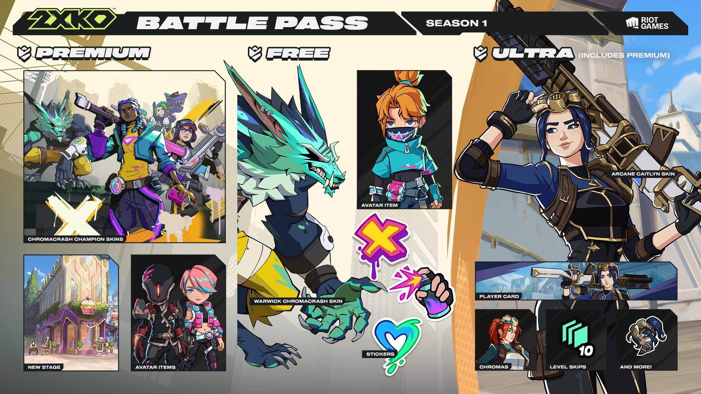
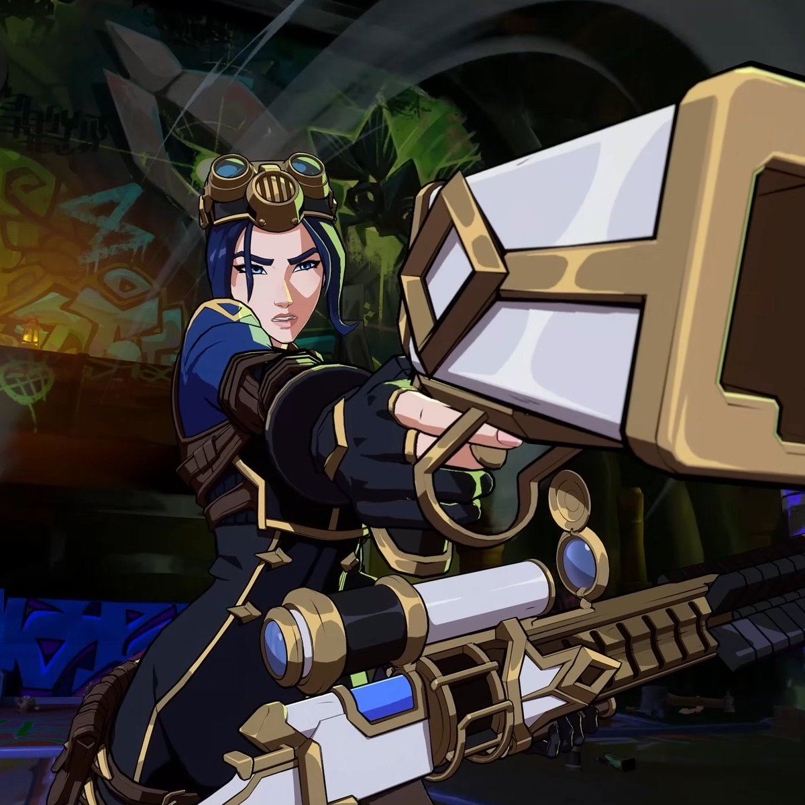

Passe de Batalha: Progresso e Caos
A primeira temporada oficial de 2XKO chegou trazendo a temática de Arcane. Com 50 níveis de recompensas, o passe "Progresso e Caos" oferece desde cosméticos simples até skins lendárias.

Como funciona o Progresso?
Você ganha XP do Passe ao completar partidas (vencendo ou perdendo) e, principalmente, através das Missões Diárias e Semanais. O passe possui uma trilha Grátis e uma trilha Premium, que pode ser adquirida na loja.

Recompensa Máxima: Caitlyn Arcane
Disponível no nível 50 da trilha Premium, esta skin muda completamente os efeitos visuais dos tiros e armadilhas da Xerife.
Conteúdo em Destaque
Além das skins, o passe introduz novos efeitos de "Burst" e adesivos para comunicação rápida durante as lutas.
| Nível | Recompensa Principal |
|---|---|
| 01 | Acesso Antecipado: Nova Fuse "Sidekick" |
| 15 | Emote Animado: Ekko "Pensativo" |
| 30 | Skin: Vi Defensora de Piltover |
| 50 | Skin Lendária: Caitlyn Arcane |
Dicas para Upar Rápido
O Passe de Batalha: Progresso e Caos ficará disponível pelos próximos 90 dias. Boa sorte na subida!